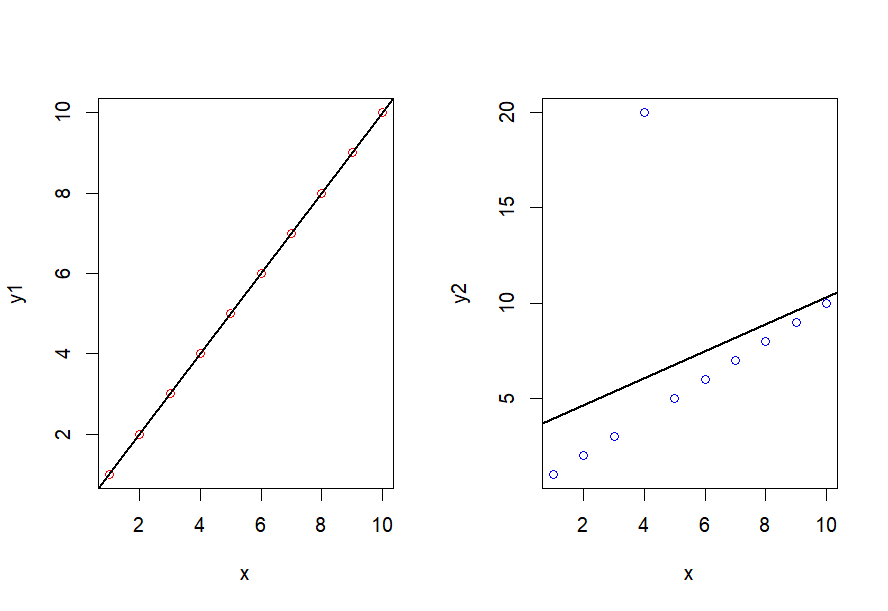

前面我们介绍了线性回归如何建立，如何做统计推断，以及如何完成预测。这一节我们来学习如何判断拟合的线性回归模型是否足够好，如果不好应当如何优化。为了一般性，本讲所使用的模型都是带截距项的、进行过中心化处理的线性回归模型，即：
Y = α E n + X ~ c β I + e Y=\alpha E_n+\widetilde X_c\beta_I+e
Y = α E n + X c β I + e
另外，为了更好的进行说明，我们补充一点记号。我们已经知道：
Y ^ = X β ^ = X ( X T X ) − 1 X T Y \hat Y=X\hat\beta=X(X^TX)^{-1}X^TY
Y ^ = X β ^ = X ( X T X ) − 1 X T Y
我们记H ≡ X ( X T X ) − 1 X T H\equiv X(X^TX)^{-1}X^T H ≡ X ( X T X ) − 1 X T 帽子矩阵 (Hat Matrix)。
帽子矩阵是一个投影矩阵，所以它对称幂等，且有：
r a n k ( H ) = t r ( H ) = p , H X = X , H E n = E n rank(H)=tr(H)=p,HX=X,HE_n=E_n
r ank ( H ) = t r ( H ) = p , H X = X , H E n = E n
为了后续叙述方便，我们记帽子矩阵的对角元是h i i h_{ii} h ii
一、线性回归模型的诊断
1.1 决定系数
判断一个线性回归模型是否能够很好的解释观测数据，仅仅依靠回归系数是否显著是不够的。某个回归系数“显著”，只能说明该自变量发生一个单位变化时，观测值会发生显著的变化，但是观测值发生的变化中有多少比例是因为自变量发生变化而导致的？更严谨一点来说，我们想知道的是观测值的方差（波动情况）有多少可以被回归模型来解释。这就导出了决定系数 (Coefficient of Determination)的概念。
首先，观测值的波动情况可以由总平方和 (Total Sum of Squares, TSS)来描述，即：
T S S = ∑ i = 1 n ( y i − y ‾ ) 2 TSS=\sum_{i=1}^n(y_i-\overline y)^2
TSS = i = 1 ∑ n ( y i − y ) 2
其次，拟合值的波动情况可以由回归平方和 (Regression Sum of Squares, RSS)来描述，即：
R S S = ∑ i = 1 n ( y ^ i − y ‾ ) 2 = β ^ I T X ~ c T Y RSS=\sum_{i=1}^n(\hat y_i-\overline y)^2=\hat\beta_I^T\widetilde X_c^TY
RSS = i = 1 ∑ n ( y ^ i − y ) 2 = β ^ I T X c T Y
于是，我们可以定义决定系数 为：
R 2 = R S S T S S = β ^ I T X ~ c T Y ∑ i = 1 n ( y i − y ‾ ) 2 R^2=\frac{RSS}{TSS}=\frac{\hat\beta_I^T\widetilde X_c^TY}{\sum_{i=1}^n(y_i-\overline y)^2}
R 2 = TSS RSS = ∑ i = 1 n ( y i − y ) 2 β ^ I T X c T Y
从公式中可以看到，R 2 R^2 R 2 R 2 R^2 R 2 R 2 R^2 R 2 R 2 R^2 R 2
为什么回归平方和是这样构造的？
你会发现回归平方和本质是拟合值的波动情况，也就是求每个拟合值与观测值均值的差值。那么为什么可以用拟合值和观测值均值作差？这里涉及到线性回归的一个特点：带截距项的线性回归模型一定经过样本中心点 ( X ‾ , Y ‾ ) (\overline X,\overline Y) ( X , Y )
根据正规方程：
X T X β ^ = X T Y X^TX\hat\beta=X^TY
X T X β ^ = X T Y
移项可得：
X T ( Y − X β ^ ) = 0 X^T(Y-X\hat\beta)=0
X T ( Y − X β ^ ) = 0
如果存在截距项，那么设计矩阵的第一列一定是E n E_n E n
E n T ( Y − X β ^ ) = 0 E_n^T(Y-X\hat\beta)=0
E n T ( Y − X β ^ ) = 0
由于Y − X β ^ Y-X\hat\beta Y − X β ^
∑ i = 1 n ( y i − y ^ i ) = 0 \sum_{i=1}^n(y_i-\hat y_i)=0
i = 1 ∑ n ( y i − y ^ i ) = 0
同时除以n n n y ‾ = y ^ ‾ \overline y=\overline{\hat y} y = y ^
y ‾ = y ^ ‾ = 1 n X T β ^ = x ‾ T β ^ \overline y=\overline{\hat y}=\frac{1}{n}X^T\hat\beta=\overline x^T\hat\beta
y = y ^ = n 1 X T β ^ = x T β ^
所以模型经过样本中心的( X ‾ , Y ‾ ) (\overline X,\overline Y) ( X , Y )
你或许会好奇TSS中不能由RSS解释的部分是什么，也就是TSS-RSS的部分。通过推导，我们可以得到：
T S S − R S S = ∑ i = 1 n ( y i − y ^ i ) 2 ≡ E S S TSS-RSS=\sum_{i=1}^n(y_i-\hat y_i)^2\equiv ESS
TSS − RSS = i = 1 ∑ n ( y i − y ^ i ) 2 ≡ ESS
可以看到，TSS和RSS之间的差值就是残差平方和 (Residual Sum of Squares, ESS)，它描述了观测值与拟合值之间的差距，说明观测值的波动无法完全由回归平方和解释，还存在的不可解释的差距就是残差平方和。
不同讲义对这三种平方和的记号可能会不同，有的讲义会把残差平方和写作RSS，对应“Residual”这个词，而把回归平方和重新命名为可解释的平方和 (Explained Sum of Squares)，因此把回归平方和写成ESS。如果你发现其他地方有这种写法，请一定要对应好中英文的差异。
另外，本讲这样命名是因为从分子分母的构造出发，而不是从残差出发，并且笔者认为“回归平方和”这个词更加直观。不过你想用哪个记号并不重要，只要不影响定义就可以。
1.2 残差诊断
除了检验拟合程度，线性回归模型还有一个假设条件需要检验——GM假定。如果模型符合GM假定，那么模型的参数量就会下降；如果残差还服从正态分布，那么就有：
e ^ i ∼ N ( 0 , σ 2 ( 1 − h i i ) ) \hat e_i\sim N(0,\sigma^2(1-h_{ii}))
e ^ i ∼ N ( 0 , σ 2 ( 1 − h ii ))
我们可以做标准化：
e ^ i σ 1 − h i i ∼ N ( 0 , 1 ) \frac{\hat e_i}{\sigma\sqrt{1-h_{ii}}}\sim N(0,1)
σ 1 − h ii e ^ i ∼ N ( 0 , 1 )
用样本的方差估计值代替σ 2 \sigma^2 σ 2
r i = e ^ i σ ^ 1 − h i i r_i=\frac{\hat e_i}{\hat\sigma\sqrt{1-h_{ii}}}
r i = σ ^ 1 − h ii e ^ i
r i r_i r i 学生化内残差 ，是残差诊断中的重要指标。
虽然r i r_i r i y ^ i \hat y_i y ^ i r i ∼ N ( 0 , 1 ) r_i\sim N(0,1) r i ∼ N ( 0 , 1 ) y ^ i \hat y_i y ^ i r i r_i r i 残差图 ，如果满足上述条件，那么图像应大致关于r = 0 r=0 r = 0 0 ± 1.96 0\pm1.96 0 ± 1.96
如果残差图的分布情况不理想，我们就需要分开进行检验，看看到底是哪一条不满足：
残差正态性诊断：检验残差是否服从正态分布，方法很多，比如Kolmogorov–Smirnov检验、Shapiro–Wilk检验等。
残差独立性检验：检验残差之间是否相互独立，一般用于时序数据，比如Durbin-Waston检验。
残差等方差检验：检验残差之间是否等方差，比如Breusch-Pagan检验(ncv检验)。
1.3 强影响点诊断
除了残差，观测值的变化也会显著影响模型的参数估计和推断，一个离群的点会极大影响拟合的结果，这些点我们统称为强影响点 。下面是一张示意图，展示了强影响点对回归直线的影响：

因此，找出强影响点是回归诊断中的一个关键。找出强影响点有这么几种方法：
首先是高杠杆点法。所谓高杠杆点 (High Leverage Point)，就是拟合直线必须经过的观测点( x i , y i ) (x_i,y_i) ( x i , y i )
当h i i → 1 h_{ii}\rightarrow1 h ii → 1 C o v ( e ^ ) → 0 Cov(\hat e)\rightarrow0 C o v ( e ^ ) → 0 e ^ → 0 \hat e\rightarrow0 e ^ → 0 y ^ i → y i \hat y_i\rightarrow y_i y ^ i → y i ( x i , y i ) (x_i,y_i) ( x i , y i ) h i i h_{ii} h ii h i i h_{ii} h ii
h i i = ( 1 x i T ) ( X T X ) − 1 ( 1 x i ) = 1 n + ( x i − x ‾ ) T ( X ~ c T X ~ c ) − 1 ( x i − x ‾ ) \begin{aligned}
h_{ii}&=\begin{pmatrix}1&x_i^T\end{pmatrix}\begin{pmatrix}X^TX\end{pmatrix}^{-1}\begin{pmatrix}1\\ x_i\end{pmatrix}\\
&=\frac{1}{n}+(x_i-\overline x)^T(\widetilde X_c^T\widetilde X_c)^{-1}(x_i-\overline x)
\end{aligned}
h ii = ( 1 x i T ) ( X T X ) − 1 ( 1 x i ) = n 1 + ( x i − x ) T ( X c T X c ) − 1 ( x i − x )
所以一个点x i x_i x i x ‾ \overline x x h i i h_{ii} h ii y ^ i \hat y_i y ^ i y i y_i y i
一般认为，由于h i i h_{ii} h ii 1 n ∑ h i i = 1 n t r ( H ) = p / n \frac{1}{n}\sum h_{ii}=\frac{1}{n}tr(H)=p/n n 1 ∑ h ii = n 1 t r ( H ) = p / n h i i > 2 p / n h_{ii}>2p/n h ii > 2 p / n
其次是库克距离 (Cook’s Distance)。库克距离的原理是，根据删除一个点前后回归系数的变化来描述一个点的影响情况。要判断第i i i i i i β ^ ( i ) \hat\beta_{(i)} β ^ ( i )
D i = ( β ^ − β ^ ( i ) ) T X T X ( β ^ − β ^ ( i ) ) p σ ^ 2 D_i=\frac{(\hat\beta-\hat\beta_{(i)})^TX^TX(\hat\beta-\hat\beta_{(i)})}{p\hat\sigma^2}
D i = p σ ^ 2 ( β ^ − β ^ ( i ) ) T X T X ( β ^ − β ^ ( i ) )
D i D_i D i D i D_i D i
另外，有如下定理可方便计算库克距离：
D i = 1 p h i i 1 − h i i r i 2 D_i=\frac{1}{p}\frac{h_{ii}}{1-h_{ii}}r_i^2
D i = p 1 1 − h ii h ii r i 2
最后是异常值检测 。异常值检测与库克距离有些类似，都是要去掉一个点，然后观察模型的变化。只不过异常值检测是基于拟合值（而不是回归系数）的变化来构造统计量的。如果要判断第i i i y ( i ) y_{(i)} y ( i ) i i i y ^ ( i ) \hat y_{(i)} y ^ ( i ) E ( y ( i ) − y ^ ( i ) ) = 0 E(y_{(i)}-\hat y_{(i)})=0 E ( y ( i ) − y ^ ( i ) ) = 0 y ( i ) y_{(i)} y ( i ) y ^ ( i ) \hat y_{(i)} y ^ ( i )
t i = y ( i ) − y ^ ( i ) σ ^ ( i ) 1 + x i T ( X ( i ) T X ( i ) ) − 1 x i ∼ t n − p − 1 t_i=\frac{y_{(i)}-\hat y_{(i)}}{\hat\sigma_{(i)}\sqrt{1+x_i^T(X_{(i)}^TX_{(i)})^{-1}x_i}}\sim t_{n-p-1}
t i = σ ^ ( i ) 1 + x i T ( X ( i ) T X ( i ) ) − 1 x i y ( i ) − y ^ ( i ) ∼ t n − p − 1
这个被称为学生化外残差 ，之所以是“外”残差，是因为第i i i t i t_i t i p p p y ( i ) y_{(i)} y ( i )
进一步地，有如下定理：
t i = e ^ i σ ^ ( i ) 1 − h i i t_i=\frac{\hat e_i}{\hat\sigma_{(i)}\sqrt{1-h_{ii}}}
t i = σ ^ ( i ) 1 − h ii e ^ i
也可以方便计算学生化外残差。
1.4 共线性诊断
共线性 (collinearity)，指的是设计矩阵X X X r a n k ( X n × p ) < p rank(X_{n\times p})<p r ank ( X n × p ) < p X T X X^TX X T X
共线性的出现是无法预知的。一般来说，经过精确设计的设计矩阵是不会出现共线性的，但是在实际数据中，由于自变量的选择和取值，X T X X^TX X T X
要考察模型的共线性，有很多种指标：
方差膨胀因子 (Variance Inflation Factor, VIF)是一种量化共线性程度的指标，也是实践当中非常常用的指标。VIF的原理是，对于要考察的自变量X j X_j X j X j X_j X j X i ( i = 1 , ⋯ , p , i ≠ j ) X_i(i=1,\cdots,p,i\ne j) X i ( i = 1 , ⋯ , p , i = j )
X j = α + X 1 β 1 + ⋯ + X j − 1 β j − 1 + X j + 1 β j + 1 + ⋯ + X p β p X_j=\alpha+X_1\beta_1+\cdots+X_{j-1}\beta_{j-1}+X_{j+1}\beta_{j+1}+\cdots+X_p\beta_p
X j = α + X 1 β 1 + ⋯ + X j − 1 β j − 1 + X j + 1 β j + 1 + ⋯ + X p β p
该模型可以计算出一个决定系数R j 2 R_j^2 R j 2
V I F j = 1 1 − R j 2 , j = 1 , ⋯ , p VIF_j=\frac{1}{1-R_j^2},j=1,\cdots,p
V I F j = 1 − R j 2 1 , j = 1 , ⋯ , p
如果有两个自变量之间存在共线性，那么上述回归模型的决定系数变大甚至接近1，这是因为这两个自变量之间能够互相线性表示，所以拟合程度很高。此时带入VIF计算时，最终的VIF值就会变得非常大。因此，我们就可以通过VIF值来判断共线性。
一般地，我们认为VIF在05之间表示不存在共线性，5 10之间表示存在弱共线性，>10表示存在强共线性。
ε-病态 。给定一个很小的数ϵ \epsilon ϵ X X X λ i < ϵ \lambda_i<\epsilon λ i < ϵ X X X
条件数 。定义条件数c o n d ( X ) = λ m a x ( X T X ) / λ m i n ( X T X ) cond(X)=\sqrt{\lambda_{max}(X^TX)/\lambda_{min}(X^TX)} co n d ( X ) = λ ma x ( X T X ) / λ min ( X T X ) λ ( ) \lambda() λ ( )
上面这两个指标都是从设计矩阵的特征值来判断共线性的，最后我们还可以直接从β ^ \hat\beta β ^ β ^ \hat\beta β ^
回归系数的均方误差 (Mean Squared Error, MSE)。回归系数的均方误差的计算公式为：
M S E ( β ^ ) = t r [ E ( β ^ − β ) T ( β ^ − β ) ] = t r [ V a r ( β ^ − β ) ] = σ 2 t r ( X T X ) − 1 = σ 2 ∑ i = 1 p − 1 1 λ i \begin{aligned}
MSE(\hat\beta)&=tr\left[E(\hat\beta-\beta)^T(\hat\beta-\beta)\right]\\
&=tr\left[Var(\hat\beta-\beta)\right]\\
&=\sigma^2tr(X^TX)^{-1}\\
&=\sigma^2\sum_{i=1}^{p-1}\frac{1}{\lambda_i}
\end{aligned}
MSE ( β ^ ) = t r [ E ( β ^ − β ) T ( β ^ − β ) ] = t r [ Va r ( β ^ − β ) ] = σ 2 t r ( X T X ) − 1 = σ 2 i = 1 ∑ p − 1 λ i 1
如果X T X X^TX X T X M S E ( β ^ ) MSE(\hat\beta) MSE ( β ^ )
二、模型补救与优化
通过第1节的一系列诊断，我们已经可以找到拟合模型中的缺陷。在这一节我们将学习如何补救、优化效果不好的模型。
2.1 Box-Cox变换
我们首先介绍的是如何处理不满足GM假定的回归模型。虽然我们在之前学习过Aitken模型和奇异线性模型的解决办法，但是模型复杂、求解复杂，在实际运用中也没有那么实用。当然，在算力强劲的信息时代也不会有这些问题，但是我们可以有更简便的处理办法。
Box和Cox在1964年提出了一套系统的方法来处理不满足GM假定的模型，通过简单的变换使得模型的正态性和方差齐性都有明显的改善。Box-Cox变换是一个含参数的变换方法，针对的是响应变量的一种变化，即：
Y ( λ ) = { Y λ − 1 λ , λ ≠ 0 ln Y , λ = 0 Y^{(\lambda)}=\begin{cases}
\frac{Y^\lambda-1}{\lambda},&\lambda\ne0\\
\ln Y,&\lambda=0
\end{cases}
Y ( λ ) = { λ Y λ − 1 , ln Y , λ = 0 λ = 0
通过转换以后，将新的Y ( λ ) Y^{(\lambda)} Y ( λ )
至于如何估计λ \lambda λ Y ( λ ) ∼ N ( X β , σ 2 I n ) Y^{(\lambda)}\sim N(X\beta,\sigma^2I_n) Y ( λ ) ∼ N ( Xβ , σ 2 I n )
λ ^ = arg min λ ( Z ( λ ) ) T ( I n − P X ) Z ( λ ) z i ( λ ) = { y 1 ( λ ) ( Π i = 1 n y i ) 1 − λ n , λ ≠ 0 ( ln y i ) ( Π i = 1 n y i ) 1 n , λ = 0 Z ( λ ) = ( z 1 ( λ ) , ⋯ , z n ( λ ) ) T \begin{aligned}
\hat\lambda&=\arg\min_\lambda (Z^{(\lambda)})^T(I_n-P_X)Z^{(\lambda)}\\
z_i^{(\lambda)}&=\begin{cases}
y_1^{(\lambda)}\left(\Pi_{i=1}^ny_i\right)^{\frac{1-\lambda}{n}},&\lambda\ne0\\
(\ln y_i)\left(\Pi_{i=1}^ny_i\right)^{\frac{1}{n}},&\lambda=0
\end{cases}\\
Z^{(\lambda)}&=(z_1^{(\lambda)},\cdots,z_n^{(\lambda)})^T
\end{aligned}
λ ^ z i ( λ ) Z ( λ ) = arg λ min ( Z ( λ ) ) T ( I n − P X ) Z ( λ ) = { y 1 ( λ ) ( Π i = 1 n y i ) n 1 − λ , ( ln y i ) ( Π i = 1 n y i ) n 1 , λ = 0 λ = 0 = ( z 1 ( λ ) , ⋯ , z n ( λ ) ) T
2.2 主成分回归
对于出现共线性的模型，一种常用的方法是主成分分析 (Principle Component Analysis, PCA)。这里我们不阐述主成分分析的具体内容，如果你不知道也能继续学习。
在介绍主成分回归之前，我们有必要介绍线性回归的典则形式 (canonical form)。设X T X = Φ Λ Φ T X^TX=\Phi\Lambda\Phi^T X T X = ΦΛ Φ T Λ = d i a g ( λ 1 , ⋯ , λ p − 1 ) \Lambda=diag(\lambda_1,\cdots,\lambda_{p-1}) Λ = d ia g ( λ 1 , ⋯ , λ p − 1 ) Φ = ( ϕ 1 , ⋯ , ϕ p − 1 ) \Phi=(\phi_1,\cdots,\phi_{p-1}) Φ = ( ϕ 1 , ⋯ , ϕ p − 1 )
Y = α E n + Z γ + e , Z = X Φ , γ = Φ T β Y=\alpha E_n+Z\gamma+e,Z=X\Phi,\gamma=\Phi^T\beta
Y = α E n + Z γ + e , Z = X Φ , γ = Φ T β
假设模型满足GM假定，那么有：
α ^ = y ‾ , γ ^ = Λ − 1 Z T Y , V a r ( γ ^ ) = σ 2 Λ − 1 \hat\alpha=\overline y,\hat\gamma=\Lambda^{-1}Z^TY,Var(\hat\gamma)=\sigma^2\Lambda^{-1}
α ^ = y , γ ^ = Λ − 1 Z T Y , Va r ( γ ^ ) = σ 2 Λ − 1
要完成主成分回归，首先要进行主成分分析。对于典则形式，我们选取q q q λ 1 , ⋯ , λ q \lambda_1,\cdots,\lambda_q λ 1 , ⋯ , λ q ϕ i \phi_i ϕ i z i = X ϕ i z_i=X\phi_i z i = X ϕ i i i i
Y = α E n + Z ~ γ ~ + e Y=\alpha E_n+\widetilde Z\widetilde\gamma+e
Y = α E n + Z γ + e
其中Z ~ = X ( ϕ 1 , ⋯ , ϕ q ) \widetilde Z=X(\phi_1,\cdots,\phi_q) Z = X ( ϕ 1 , ⋯ , ϕ q ) γ ~ = ( γ 1 , ⋯ , γ q ) T \widetilde\gamma=(\gamma_1,\cdots,\gamma_q)^T γ = ( γ 1 , ⋯ , γ q ) T
α ^ = y ‾ , γ ~ ^ = ( Z ~ T Z ~ ) − 1 Z ~ T Y \hat\alpha=\overline y,\hat{\widetilde\gamma}=(\widetilde Z^T\widetilde Z)^{-1}\widetilde Z^TY
α ^ = y , γ ^ = ( Z T Z ) − 1 Z T Y
在原模型存在共线性时，通过保留q q q
还有一个问题是，要选择哪q q q
∑ i = 1 q λ i ∑ i = 1 p − 1 λ i ≥ c \frac{\sum_{i=1}^q\lambda_i}{\sum_{i=1}^{p-1}\lambda_i}\ge c
∑ i = 1 p − 1 λ i ∑ i = 1 q λ i ≥ c
c c c
主成分回归也等价于下面这个优化问题的解。设X X X z 1 = X ϕ 1 z_1=X\phi_1 z 1 = X ϕ 1
ϕ 1 = arg max ∣ ∣ ϕ ∣ ∣ = 1 ϕ T X T X ϕ \phi_1=\arg\max_{||\phi||=1}\phi^TX^TX\phi
ϕ 1 = arg ∣∣ ϕ ∣∣ = 1 max ϕ T X T Xϕ
第i i i z i = X ϕ i z_i=X\phi_i z i = X ϕ i
ϕ i = arg max ∣ ∣ ϕ ∣ ∣ = 1 , ϕ l T X T X ϕ = 0 ϕ T X T X ϕ , l = 1 , ⋯ , i − 1 \phi_i=\arg\max_{||\phi||=1,\phi_l^TX^TX\phi=0}\phi^TX^TX\phi,l=1,\cdots,i-1
ϕ i = arg ∣∣ ϕ ∣∣ = 1 , ϕ l T X T Xϕ = 0 max ϕ T X T Xϕ , l = 1 , ⋯ , i − 1
选择合适的q ≤ p − 1 q\le p-1 q ≤ p − 1
y ^ P C R = y ‾ + ∑ i = 1 q y ^ i z i \hat{y}^{PCR}=\overline y+\sum_{i=1}^q\hat y_iz_i
y ^ PCR = y + i = 1 ∑ q y ^ i z i
2.3 偏最小二乘回归
2.2小节讲述的主成分回归只考虑了自变量，没有考虑响应变量。偏最小二乘法 (Partial Least Squares, PLS)则利用响应变量来分解，但是基本原理是一致的。
偏最小二乘回归等价于下面这个优化问题的解。设X , Y X,Y X , Y z 1 = X ϕ 1 z_1=X\phi_1 z 1 = X ϕ 1
ϕ 1 = arg max ∣ ∣ ϕ ∣ ∣ = 1 ϕ T X T Y Y T X ϕ \phi_1=\arg\max_{||\phi||=1}\phi^TX^TYY^TX\phi
ϕ 1 = arg ∣∣ ϕ ∣∣ = 1 max ϕ T X T Y Y T Xϕ
第i i i z i = X ϕ i z_i=X\phi_i z i = X ϕ i
ϕ i = arg max ∣ ∣ ϕ ∣ ∣ = 1 , ϕ l T X T X ϕ = 0 ϕ T X T Y Y T X ϕ , l = 1 , ⋯ , i − 1 \phi_i=\arg\max_{||\phi||=1,\phi_l^TX^TX\phi=0}\phi^TX^TYY^TX\phi,l=1,\cdots,i-1
ϕ i = arg ∣∣ ϕ ∣∣ = 1 , ϕ l T X T Xϕ = 0 max ϕ T X T Y Y T Xϕ , l = 1 , ⋯ , i − 1
选择合适的q ≤ p − 1 q\le p-1 q ≤ p − 1
y ^ P L S = y ‾ + ∑ i = 1 q y ^ i z i \hat{y}^{PLS}=\overline y+\sum_{i=1}^q\hat y_iz_i
y ^ P L S = y + i = 1 ∑ q y ^ i z i
2.4 岭估计
对于共线性问题，我们还有更现代的方法。为了能提高对病态设计矩阵的耐受性，Hoerl和Kennard在1970年提出，可以使用
β ^ ( k ) = ( X T X + k I p − 1 ) − 1 X T Y \hat\beta(k)=(X^TX+kI_{p-1})^{-1}X^TY
β ^ ( k ) = ( X T X + k I p − 1 ) − 1 X T Y
作为β \beta β 岭估计 (Ridge Estimate)。
从直观上来看，当X T X X^TX X T X X T X + k I p − 1 X^TX+kI_{p-1} X T X + k I p − 1
岭估计又被称为收缩方法 ，这是因为它相当于为原始的最小二乘估计β ^ \hat\beta β ^ 收缩因子 ：
β ^ ( k ) = ( X T X + k I p − 1 ) − 1 X T Y = ( X T X + k I p − 1 ) − 1 X T X β ^ \hat\beta(k)=(X^TX+kI_{p-1})^{-1}X^TY=(X^TX+kI_{p-1})^{-1}X^TX\hat\beta
β ^ ( k ) = ( X T X + k I p − 1 ) − 1 X T Y = ( X T X + k I p − 1 ) − 1 X T X β ^
接下来的问题是，添加k k k k k k
证明 ：一定能找到这样的k k k M S E ( β ^ ( k ) ) < M S E ( β ^ ) MSE(\hat\beta(k))<MSE(\hat\beta) MSE ( β ^ ( k )) < MSE ( β ^ )
采用典则形式来证明，那我们令
γ ^ ( k ) = ( Z T Z + k I p − 1 ) − 1 Z T Y = ( Λ + k I p − 1 ) − 1 Z T Y \begin{aligned}\hat\gamma(k)&=(Z^TZ+kI_{p-1})^{-1}Z^TY\\ &=(\Lambda+kI_{p-1})^{-1}Z^TY\end{aligned}
γ ^ ( k ) = ( Z T Z + k I p − 1 ) − 1 Z T Y = ( Λ + k I p − 1 ) − 1 Z T Y
于是
β ^ ( k ) = ( X T X + k I p − 1 ) − 1 X T Y = Φ γ ^ ( k ) \hat\beta(k)=(X^TX+kI_{p-1})^{-1}X^TY=\Phi\hat\gamma(k)
β ^ ( k ) = ( X T X + k I p − 1 ) − 1 X T Y = Φ γ ^ ( k )
那么：
M S E [ γ ^ ( k ) ] = M S E [ β ^ ( k ) ] MSE[\hat\gamma(k)]=MSE[\hat\beta(k)]
MSE [ γ ^ ( k )] = MSE [ β ^ ( k )]
对k k k
∂ ∂ k M S E [ γ ^ ( k ) ] = ∂ ∂ k { ∑ i = 1 p − 1 k 2 γ i 2 ( λ i + k ) 2 + σ 2 ∑ i = 1 p − 1 λ i ( λ i + k ) 2 } = 2 ∑ i = 1 p − 1 λ i ( k γ i 2 − σ 2 ) ( λ i + k ) 3 \begin{aligned}\frac{\partial}{\partial k}MSE[\hat\gamma(k)]&=\frac{\partial}{\partial k}\left\{\sum_{i=1}^{p-1}\frac{k^2\gamma_i^2}{(\lambda_i+k)^2}+\sigma^2\sum_{i=1}^{p-1}\frac{\lambda_i}{(\lambda_i+k)^2}\right\}\\ &=2\sum_{i=1}^{p-1}\frac{\lambda_i(k\gamma_i^2-\sigma^2)}{(\lambda_i+k)^3}\end{aligned}
∂ k ∂ MSE [ γ ^ ( k )] = ∂ k ∂ { i = 1 ∑ p − 1 ( λ i + k ) 2 k 2 γ i 2 + σ 2 i = 1 ∑ p − 1 ( λ i + k ) 2 λ i } = 2 i = 1 ∑ p − 1 ( λ i + k ) 3 λ i ( k γ i 2 − σ 2 )
可以发现，当k = 0 k=0 k = 0 γ ^ ( k ) = γ ^ \hat\gamma(k)=\hat\gamma γ ^ ( k ) = γ ^ k ∗ k^* k ∗ k ∈ [ 0 , k ∗ ) k\in[0,k^*) k ∈ [ 0 , k ∗ )
M S E [ γ ^ ( k ) ] < M S E [ γ ^ ( 0 ) ] = M S E ( γ ^ ) MSE[\hat\gamma(k)]<MSE[\hat\gamma(0)]=MSE(\hat\gamma)
MSE [ γ ^ ( k )] < MSE [ γ ^ ( 0 )] = MSE ( γ ^ )
因此原命题得证。
那么如何选取这个k k k
k ^ = σ ^ 2 max 1 ≤ i ≤ p − 1 γ ^ i 2 \hat k=\frac{\hat\sigma^2}{\max_{1\le i\le p-1}\hat\gamma_i^2}
k ^ = max 1 ≤ i ≤ p − 1 γ ^ i 2 σ ^ 2
三、基于子集的变量选择方法
前面我们介绍了如何诊断回归模型，如何补救和优化，但我们忽略了对自变量的选择问题。在实际应用中，由于我们要探讨的因素很多，所以导致自变量的数量往往巨大，所有自变量都参与运算不太现实，也没有必要，毕竟我们感兴趣的是真正显著的、有作用的变量。因此，有必要对自变量进行筛选，从而实现降维。
3.1 所有子集选取
所有子集选取应当是最直接的一种想法，也就是说，我只要把所有的自变量组合（如果自变量个数为p p p 2 p 2^p 2 p
那么现在的一个问题时，如何比较两个拟合模型呢？你当然可以使用我们之前学过的F F F
Adjusted R 2 R^2 R 2
Mallow’s C p C_p C p
AIC准则
BIC准则
Adjusted R 2 R^2 R 2
相信你已经了解了决定系数，但是R 2 R^2 R 2
A d j R 2 = 1 − n − 1 n − p ( 1 − R 2 ) Adj\ R^2=1-\frac{n-1}{n-p}(1-R^2)
A d j R 2 = 1 − n − p n − 1 ( 1 − R 2 )
p p p A d j R 2 Adj\ R^2 A d j R 2
Mallow’s C p C_p C p
假定全模型有s s s Y = X n × s β + e Y=X_{n\times s}\beta+e Y = X n × s β + e p p p Y ^ = X p β ^ p \hat Y=X_p\hat\beta_p Y ^ = X p β ^ p Y ^ \hat Y Y ^ E Y EY E Y
M S E p = E ( Y ^ − E Y ) T ( Y ^ − E Y ) = ( X p β p − E Y ) T ( X p β p − E Y ) + p σ 2 \begin{aligned}
MSE_p&=E(\hat Y-EY)^T(\hat Y-EY)\\
&=(X_p\beta_p-EY)^T(X_p\beta_p-EY)+p\sigma^2
\end{aligned}
MS E p = E ( Y ^ − E Y ) T ( Y ^ − E Y ) = ( X p β p − E Y ) T ( X p β p − E Y ) + p σ 2
我们定义：
J p = M S E p / σ 2 = ( X p β p − E Y ) T ( X p β p − E Y ) σ 2 + p J_p=MSE_p/\sigma^2=\frac{(X_p\beta_p-EY)^T(X_p\beta_p-EY)}{\sigma^2}+p
J p = MS E p / σ 2 = σ 2 ( X p β p − E Y ) T ( X p β p − E Y ) + p
虽然我们只需要找最小的J p J_p J p J p J_p J p J p J_p J p
C p = ( Y − Y ^ ) T ( Y − Y ^ ) σ ^ 2 − n + 2 p C_p=\frac{(Y-\hat Y)^T(Y-\hat Y)}{\hat\sigma^2}-n+2p
C p = σ ^ 2 ( Y − Y ^ ) T ( Y − Y ^ ) − n + 2 p
其中σ ^ 2 = Y − X β ^ s n − s \hat\sigma^2=\frac{Y-X\hat\beta_s}{n-s} σ ^ 2 = n − s Y − X β ^ s C p C_p C p
因此，Mallow’s C p C_p C p C p C_p C p
AIC准则
AIC准则是一种信息准则，不仅用于线性回归，在其他方面也有广泛运用。对于一组样本Y Y Y θ p × 1 \theta_{p\times1} θ p × 1 θ ^ \hat\theta θ ^ l p ( Y ∣ θ ) l_p(Y|\theta) l p ( Y ∣ θ )
A I C p = − 2 log l p ( Y ∣ θ ^ ) + 2 p AIC_p=-2\log l_p(Y|\hat\theta)+2p
A I C p = − 2 log l p ( Y ∣ θ ^ ) + 2 p
应当取AIC值最小的那个模型。
例如，对于线性回归来说，可以计算得到其AIC值为：
A I C p = n log ∣ ∣ Y − X p ∗ β p ∗ ∣ ∣ 2 + 2 p AIC_p=n\log||Y-X_p^*\beta_p^*||^2+2p
A I C p = n log ∣∣ Y − X p ∗ β p ∗ ∣ ∣ 2 + 2 p
AIC准则的一个缺点就是对p p p
BIC准则
BIC准则在AIC准则的基础上增加了对p p p n n n C ( n ) C(n) C ( n ) C ( n ) = log n C(n)=\log n C ( n ) = log n
B I C p = − 2 log l p ( Y ∣ θ ^ ) + 2 p log n BIC_p=-2\log l_p(Y|\hat\theta)+2p\log n
B I C p = − 2 log l p ( Y ∣ θ ^ ) + 2 p log n
3.2 贪婪算法/逐步回归
所有子集选取必然会碰到一个问题，就是变量太多，计算量太大。因此，可以选择一些贪婪算法来降低计算复杂度，这里我们介绍逐步回归 。逐步回归(Step-wise Regression)是一种贪婪算法，其原理是，从初始模型开始不断添加/删去变量，比较前后模型的差异，直到没有显著性的变化，从而找到局部最优 的子集模型。
逐步回归有三种方法：
向前选择(Forward Selection)
向后削去(Backward Elimination)
交错逐步(Hybrid Stepwise)
向前选择 ，就是从只有截距项开始，依次向模型中添加一个自变量。设已经有k k k β ^ \hat\beta β ^ β ~ \widetilde\beta β
F = E S S ( β ^ ) − E S S ( β ~ ) E S S ( β ~ ) / ( n − k − 1 ) > F 1 , n − k − 1 ( α ) F=\frac{ESS(\hat\beta)-ESS(\widetilde\beta)}{ESS(\widetilde\beta)/(n-k-1)}>F_{1,n-k-1}(\alpha)
F = ESS ( β ) / ( n − k − 1 ) ESS ( β ^ ) − ESS ( β ) > F 1 , n − k − 1 ( α )
那么就在满足这个条件的所有F F F F F F F F F
向后削去 ，就是逆向的过程，从全模型开始，依次向模型中删去自变量。设已经有k k k β ^ \hat\beta β ^ β ~ \widetilde\beta β
F = E S S ( β ^ ) − E S S ( β ~ ) E S S ( β ~ ) / ( n − k − 1 ) < F 1 , n − k − 1 ( α ) F=\frac{ESS(\hat\beta)-ESS(\widetilde\beta)}{ESS(\widetilde\beta)/(n-k-1)}<F_{1,n-k-1}(\alpha)
F = ESS ( β ) / ( n − k − 1 ) ESS ( β ^ ) − ESS ( β ) < F 1 , n − k − 1 ( α )
那么就在满足这个条件的所有F F F F F F F F F
交错逐步 ，也就是轮流运用向前选择和向后削去，直到停止。
逐步回归是非常常用的方法，在变量数目不太多时很好用。另外，模型比较也可以使用3.1小节的准则来进行。